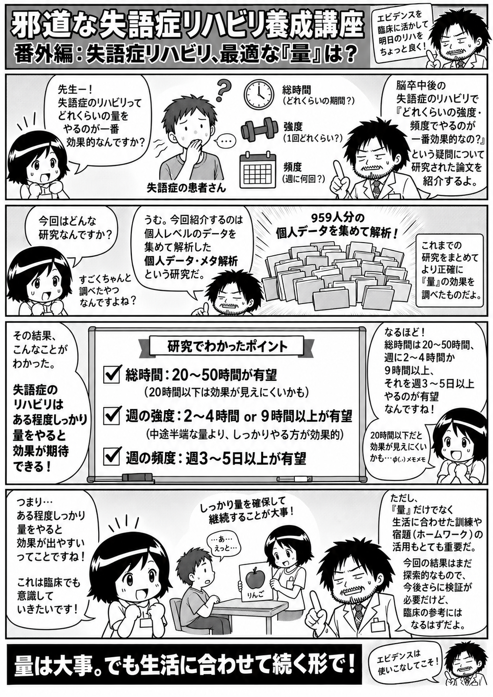

失語症リハビリ、最適な「量」は？

論文を短く読む
Clinical Question
脳卒中後失語症に対する言語療法は、総量・週あたりの強度・頻度をどの程度確保すると、より大きな改善が期待できるのか。
Bottom Line
25試験、959人の個人参加者データを用いたネットワーク・メタ解析では、総療法時間20〜50時間、週2〜4時間または9時間以上、週3〜5日程度の言語療法が、言語機能や機能的コミュニケーションのより大きな改善と関連していた。また、単に訓練時間を増やすだけでなく、理解と表出を組み合わせ、生活に合わせて内容を調整し、自宅練習を併用することも良好な成績と関連していた。
この研究の特徴は、各研究の平均値だけをまとめる通常のメタ解析ではなく、参加者一人ひとりのデータを集めたindividual participant data（IPD）メタ解析である点にある。年齢、性別、発症後期間、失語症の重症度などを調整しながら、療法の「総量」「週あたり時間」「週あたり日数」とアウトカムの関連を検討している。
総療法量では、20〜50時間の範囲で全体的言語能力と聴覚的理解の改善が大きかった。一方、20時間以下では聴覚的理解の改善が明確ではなかった。頻度についても、全体的言語能力や機能的コミュニケーションでは週3〜5日以上、聴覚的理解では週4〜5日の条件で大きな改善がみられた。
ただし、ここで示された数字をそのまま「最適処方」と考えることはできない。これは異なる治療内容・時期・対象者を含む研究を統合して得られた探索的な関連であり、特定の治療量そのものの因果効果を証明した研究ではない。
それでも、失語症リハビリを考える際に、「何をするか」だけでなく、「どの程度の量と頻度を確保するか」も治療設計の重要な要素であることを示す、臨床的に参考になる研究である。
補足を読む
この短い解説は全体として原論文を概ね正確に反映している。
ただし、厳密には以下に注意する。
- 20〜50時間は全アウトカムに共通する万能の「最適量」ではない。
- 週2〜4時間または9時間以上という所見は非線形で、単純な用量反応を意味しない。
- 本研究は治療量を直接無作為化して因果的な最適量を証明した試験ではない。
- 著者ら自身も探索的所見として位置づけている。
- アウトカムごとに使用された試験数・参加者数は異なる。
公開版では必要に応じて原文fact-checkログへのリンクも付ける。
一般向け解説
脳卒中後の失語症、リハビリは「どれくらい」やればいい？
脳卒中などのあとに起こる失語症では、言語聴覚療法（ST）が行われます。
では、
- 全部で何時間くらいやるのか
- 週に何時間くらいやるのか
- 週に何日くらいやるのか
で、回復の大きさは変わるのでしょうか？
この研究は、そこをできるだけ詳しく調べたものです。
どんなデータを使ったの？
普通のメタ解析では、各研究で報告された平均値などをまとめます。
この研究では、それより一歩踏み込んで、各研究に参加した一人ひとりのデータを集める「individual participant data（IPD）メタ解析」という方法が使われました。
対象となったのは25試験、959人です。
年齢、性別、脳卒中からの期間、失語症の重症度などの影響も考慮しながら、
- 療法の総時間
- 週あたりの時間
- 週あたりの日数
と、言語機能の改善との関係を調べています。
結果は？
大まかにいうと、
総療法時間では20〜50時間、 週あたりでは2〜4時間、または9時間以上、 頻度では週3〜5日程度
の言語療法が、より大きな改善と関連していました。
聴いて理解する力については、週4〜5日程度行われていた条件で大きな改善がみられています。
逆に、総療法時間が20時間以下では、聴覚的理解の改善がはっきり確認できなかった範囲もありました。
「量」だけ増やせばいいの？
そう単純でもありません。
成績がよかった治療には、
- 「聞いて理解する」と「話して表現する」を組み合わせる
- その人の生活や必要性に合わせて内容を調整する
- 自宅での練習も組み合わせる
といった特徴もありました。
つまり、
「とにかく長時間やればいい」
という話ではなく、
適切な内容の言語療法を、ある程度十分な量と頻度で行うことが大切
という結果です。
20〜50時間やれば正解？
ここは注意が必要です。
この研究で示された数字は、
「20〜50時間やれば必ずよくなる」
という治療処方を決めたものではありません。
もともとの研究では、治療内容、発症後の時期、重症度、評価方法などがそれぞれ異なります。
今回示されたのは、さまざまな研究をまとめてみると、
「このくらいの量や頻度で、より大きな改善が観察されていた」
という探索的な結果です。
それでも、
失語症リハビリでは「何をするか」だけでなく、「どのくらいの量と頻度を確保するか」も重要らしい
ということを、かなり大きなデータから示した研究です。
医療者向け専門解説
Background
脳卒中後失語症に対する言語聴覚療法（speech and language therapy: SLT）の有効性は広く支持されている一方、治療の総量、強度、頻度について、臨床的にどの程度を確保すべきかは明確ではありません。
従来のメタ解析では研究単位の集計値を扱うため、患者背景や治療条件の違いを十分に調整しにくいという問題があります。
本研究では、個々の参加者レベルのデータを統合するindividual participant data（IPD）を用いたnetwork meta-analysisによって、SLTのdosage、intensity、frequencyと治療アウトカムとの関連を探索しています。
Methods
対象は、脳卒中後失語症に対する言語療法を扱った25試験、959例の個人参加者データです。
年齢、性別、発症後期間、失語症重症度などを考慮しながら、
- 総療法時間（dosage）
- 週あたり療法時間（intensity）
- 週あたり療法日数（frequency）
とアウトカムとの関連を検討しました。
主なアウトカムは、全体的言語能力、聴覚的理解、呼称、機能的コミュニケーションなどです。
なお、各アウトカムおよび各network comparisonには利用可能なデータを持つ研究・参加者のみが含まれるため、すべての解析が959例全例を用いているわけではありません。
Results
総療法時間については、20〜50時間の範囲で、全体的言語能力および聴覚的理解のより大きな改善との関連が認められました。
一方、総療法時間20時間以下では、聴覚的理解について明確な改善を支持する結果が得られなかった範囲もみられています。
週あたりの療法時間では、2〜4時間/週、および9時間/週以上の条件で良好な成績との関連がみられました。
ただし、この関係は単純なdose-responseではなく、「時間を増やすほど直線的に効果が大きくなる」と解釈できる結果ではありません。
頻度については、全体的言語能力および機能的コミュニケーションでは週3〜5日程度、聴覚的理解では週4〜5日程度の条件で、より大きな改善との関連が認められました。
治療内容では、受容面と表出面を組み合わせた介入、機能的・個別的に調整された介入、処方されたhome practiceを伴う治療が良好なアウトカムと関連していました。
Interpretation
臨床的には、「失語症リハビリでは治療内容だけでなく、治療量そのものも設計変数として考える必要がある」ことを支持する結果です。
特に、低頻度・短時間の介入のみでは十分な改善が得られない可能性があり、対面療法だけで必要量を確保できない場合、自主訓練、home practice、デジタル教材などを含めて総量をどのように確保するか、という問題につながります。
一方、本研究から「総20〜50時間、週○時間、週○日が最適処方である」と結論することはできません。
Limitations
本解析は、異なる研究条件を統合した探索的解析です。
元研究間には、
- 発症後期間
- 失語症の重症度
- 治療内容
- アウトカム
- 治療提供方法
などに大きな異質性があります。
また、治療量そのものを各患者へランダムに割り付けて比較した試験ではないため、観察された関連をそのまま治療量の因果効果とみなすことはできません。
さらに、機能的コミュニケーションなど一部アウトカムでは解析対象となる研究・症例数が限られ、特定の時間帯で得られた推定値の安定性にも注意が必要です。
Novelty / Clinical relevance
本研究の大きな特徴は、研究単位の平均値ではなく、個人参加者データを統合し、患者背景を考慮しながらSLTの「量・強度・頻度」を検討した点にあります。
「どの訓練法を選ぶか」だけでなく、
- どの程度の総量を確保するか
- 週の中でどの程度の密度で提供するか
- 自宅練習を含めて治療機会をどう増やすか
という視点を、失語症リハビリの治療設計に組み込む根拠の一つとなる研究です。
論文情報・参考文献
Brady MC, Ali M, VandenBerg K, et al. Dosage, Intensity, and Frequency of Language Therapy for Aphasia: A Systematic Review–Based, Individual Participant Data Network Meta-Analysis. Stroke. 2022;53:956–967.
DOI: 10.1161/STROKEAHA.121.035216
原論文URL: https://doi.org/10.1161/STROKEAHA.121.035216
PMID: 未確認のため記載しない。